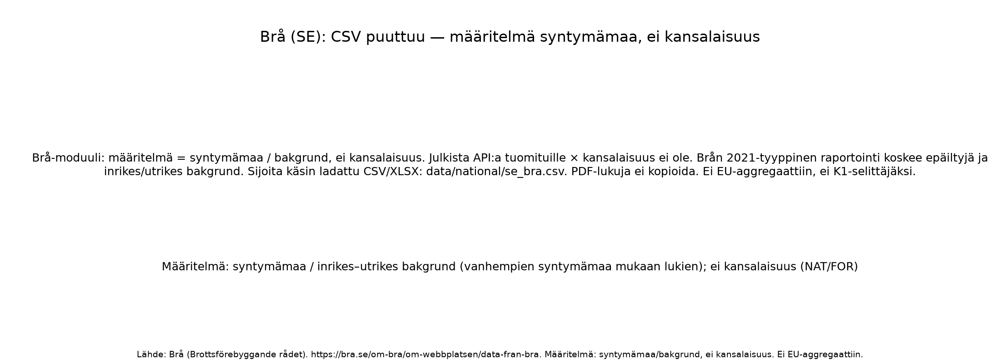

Meta
| moduuli | maa | lahde | url | maaritelma | yksikko | tiedosto | saatavuus | eu_aggregaattiin | k1_selittaja | huom |
|---|---|---|---|---|---|---|---|---|---|---|
| bra | SE | Brå (Brottsförebyggande rådet) | https://bra.se/om-bra/om-webbplatsen/data-fran-bra | syntymämaa / inrikes–utrikes bakgrund (vanhempien syntymämaa mukaan lukien); ei kansalaisuus (NAT/FOR) | epäillyt (jos raportti); tuomitut×kansalaisuus ei saatavilla CSV:nä | NaN | ei | ei | ei | Brå-moduuli: määritelmä = syntymämaa / bakgrund, ei kansalaisuus. Julkista API:a tuomituille × kansalaisuus ei ole. Brån 2021-tyyppinen raportointi koskee epäiltyjä ja inrikes/utrikes bakgrund. Sijoita käsin ladattu CSV/XLSX: data/national/se_bra.csv. PDF-lukuja ei kopioida. Ei EU-aggregaattiin, ei K1-selittäjäksi. |

Käsintaulu (jos saatavilla): data/national/se_bra.csv.
README: data/national/BRA_README.md.